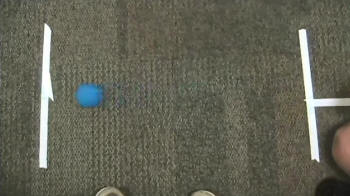

Video resources for teaching motion to middle school students. Start with simple experiments, such as a rolling ball, to teach students how to make position and velocity measurements and how to read graphs.